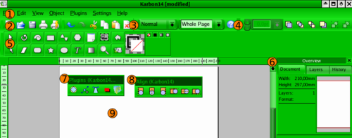

Karbon14
Karbon14 – program do tworzenia grafiki wektorowej, rozwijany przez społeczność KDE. Może przetwarzać typowe figury geometryczne i pozwala tworzyć proste rysunki i ilustracje. Program ten można znaleźć w pakiecie Calligra dla systemu Linux.
Obsługiwane formaty
Formaty importu grafiki
- Dokument Karbon14 (Format KOffice)
- Skalowalna Grafika Wektorowa (SVG)
- Plik XML
- Obraz EPS
- Plik obrazu MSOffice
- Dokument Adobe Illustrator
Formaty eksportu grafiki
- Dokument Karbon14 (Format KOffice)
- Dokument Karbon14 (Nieskompresowany XML)
- Obraz PNG
- Skalowalna Grafika Wektorowa (SVG)
- Obraz EPS
- Format obrazu programu GIMP
- Metaplik Windows
- Dokument Adobe Illustrator
Interfejs programu

- pasek rozwijalnych menu
- pasek pliku
- pasek widoku
- pasek ustawień kolejności obiektów
- pasek narzędzi
- podgląd edycji
- pasek wtyczek
- pasek wyrównania obiektów
- pole edycji rysunku
Wtyczki
- Flatten Path – spłaszczenie figury (poprzez usunięcie części węzłów)
- Insert Knots – dodanie węzła na ścieżce
- Round Corners – zaokrąglenie kątów
- Shadow Effect – rzucenie cienia pod figurą
- Whirl/Pinch – skręcenie figury
Kolejność obiektów
- Bring to Front – ustaw na wierzchu
- Raise – ustaw wyżej
- Lower – ustaw niżej
- Send to Back – ustaw na spodzie
Wyrównanie obiektów
- Align Left – wyrównanie do lewej
- Align Center (Horizontal) – wyrównanie do środka, horyzontalnie
- Align Right – wyrównanie do prawej
- Align Top – wyrównanie do góry
- Align Center (Vertical) – wyrównanie do środka, wertykalnie
- Align Bottom – wyrównanie do dołu
Overview – podgląd edycji
Domyślnie okno to zlokalizowane jest z prawej strony, obok okna edycji rysunku.
Document – zakładka z podglądem rysunku. Można, prócz wyglądu miniaturki całego rysunku, sprawdzić jego wielkość, liczbę warstw, oraz format kartki na jakiej jest rysowany.
Layers – w zakładce tej możliwy jest podgląd poszczególnych warstw, grup obiektów i pojedynczych obiektów. Po kliknięciu na którąś z gałęzi zaznaczony zostanie odpowiedni obiekt, lub ich grupa, w oknie edycji rysunku. Można tu także dodawać lub usuwać warstwy.
History – zakładka, w której ukazane są wszystkie dokonane zmiany. Historię zmian można, dla wygody, pogrupować
Narzędzia
- narzędzie wyboru
- narzędzie obracające obiekty
- narzędzie rysujące spirale
- narzędzie rysujące czworokąty
- narzędzie rysujące sinusoidy
- narzędzie rysujące wielokąty
- narzędzie wyboru deseniu
- narzędzie dodające obrazy (png, jpg, gif)
- narzędzie rysujące krzywe łamane
- okno wyboru obramowania i wypełnienia
- narzędzie do edycji węzłów
- shear
- narzędzie rysujące prostokąty z zaokrąglonymi rogami
- narzędzie rysujące gwiazdy
- narzędzie rysujące elipsy
- narzędzie do wstawiania tekstu
- narzędzie do edycji gradientów
- narzędzie powiększania
- brak wypełnienia
- wypełnienie kolorem
- wypełnienie gradientem
- deseń
Okno wyboru obramowania i wypełnienia
- ustawienie koloru konturu
- ustawienie koloru wypełnienia
Opcje i ustawienia poszczególnych narzędzi
Po wybraniu odpowiedniego narzędzia, używamy go, klikając i przeciągając kursorem po polu edycji obrazu. Opcje narzędzi będą wówczas ustawione na domyślne, lub takie z jakich skorzystano przy poprzednim użyciu narzędzia.
Okno opcji i ustawień narzędzia otwieramy
- podwójnym kliknięciu na przycisk narzędzia
- po wybraniu narzędzia kliknięcie na pole edycji obrazu (bez przeciągania)
Narzędzie wyboru